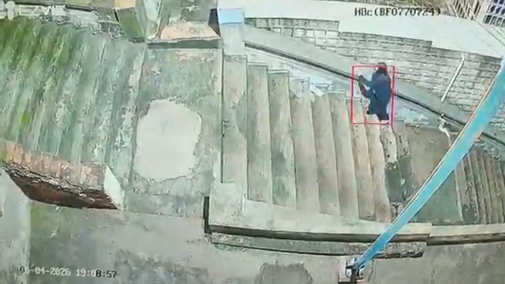
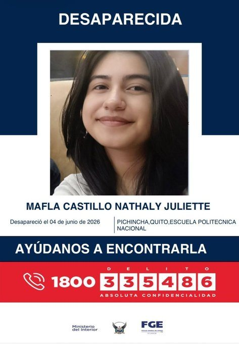
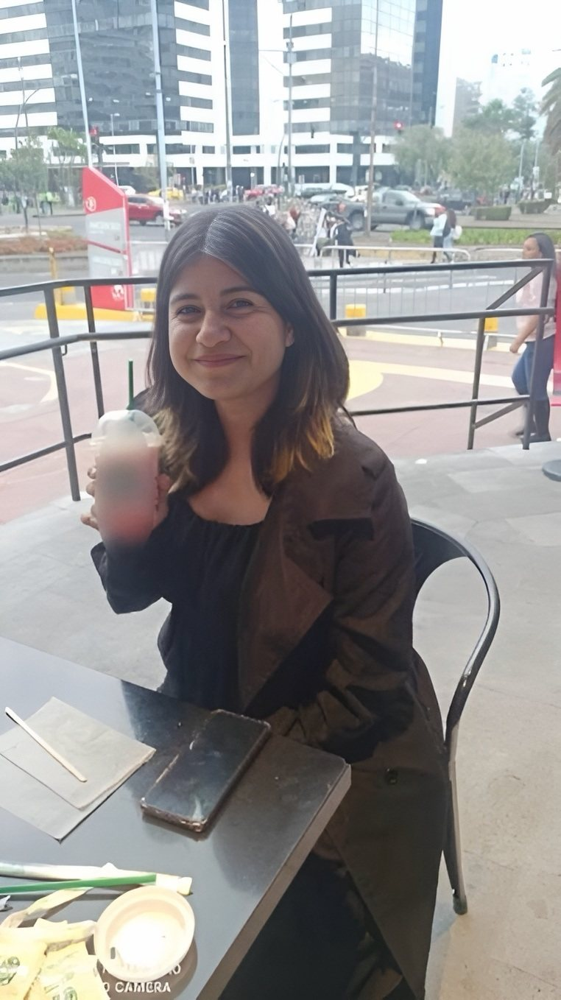

Boscán & La Moni · June 12 to 26, 2026 · Three installments on an open case
The last walk of Nathaly Mafla
A 20-year-old student walks into a restroom at the National Polytechnic School, leaves her phone with a friend and walks out alone through another door. She walks for more than an hour and twenty minutes along a route that takes half an hour, on an ankle that is swelling up. Five days later she is found twenty meters down in a ravine in La Vicentina. The bag that, according to the police report, was next to the body was still in the university's lost and found.
Outlet Boscán & La MoniPublished June 2026
Cam · stairway

The stairway on the security camera, as shown on the program. Still from the Boscán & La Moni showRecReconstruction from security camerasQuito · Thursday, June 4, 2026
Camera that recorded herNo camera1 h 20en route; the same walk, without stopping, takes half an hour
20was Nathaly Mafla's age
1 h 20for a route that takes half an hour on foot
48 hwith no missing-person report and no answer from the friend who had her phone
20 mwas the depth of the ravine where she was found
In four sentences
Nathaly Juliet Mafla Castillo, from Tulcán, was studying systems engineering at the National Polytechnic School in Quito. On Thursday, June 4, 2026, at around six in the evening, she entered the campus to use a restroom, left her phone with a classmate and never came back for it. The cameras record her leaving alone, through another door and without her bag.
On Tuesday, June 9, a police drone located her body twenty meters down in a ravine in La Vicentina, face down. The preliminary cause is a fall. Between Thursday and Saturday no one reported her missing: the classmate who had her phone did not answer her father's calls until he filed the report.
Mónica Velásquez used neighbors' cameras to reconstruct the route Nathaly took: Avenida Patria, a bus on which she tried to pay with an earring, a stairway she climbed limping and holding on to the wall, a soccer field. After that field there is not a single image more.
Andersson Boscán laid out the contradictions in the case file: a bag the police report placed next to the body that was actually in the university's lost and found; a phone unlocked by an officer and her father, outside the chain of custody; eight items of clothing in the videos and three in the ravine; a police post with no officers along the way.
Chapter 1
The young woman who went into the restroom and never came back
Nathaly Juliet Mafla Castillo was 20 years old, 1.65 meters tall, and came from Tulcán, on the border with Colombia. She was studying systems engineering at the National Polytechnic School in Quito. Monday through Friday, code and math; on weekends, beauty classes. She lived in Quito with her father, Jairo; her mother, Elizabeth Castillo, lives in Ibarra. She took no medication, had no depression and had plans, her parents say. And she had one detail that runs through the whole story: a problem with one ankle. She walked with a slight limp, and when she walked a lot, her leg swelled. She didn't like walking or climbing stairs.
Nathaly Mafla. Investigation material
On Thursday, June 4, 2026, she told her family she was going to a chiva, a party bus outing with friends. The gathering of university classmates, a sort of party on the outer grounds of the campus, was attended by the university's rector, according to investigation sources who spoke to Andersson Boscán and who were collecting videos of the event. At around six in the evening Nathaly arrived with two classmates at a gate of the Polytechnic because she needed to use the restroom. The guard told them they could not come in. She asked to be let in alone. She left her phone with one of the two, the one who would later present himself as her best friend, went up to the third floor and entered the women's restroom. She never came back for the phone and never left through that gate.
The university's cameras record her leaving shortly afterward, alone, through a different door from the one she entered and without her bag. The witnesses who saw her go in do not describe her as someone who was out of it: she could walk, move and think for herself. What happened inside has still not been seen. According to the mother's lawyers, there is a corner camera on each floor; the one on the third floor captures her leaving. Before the restroom there is a laboratory that, it is understood, she entered and stayed in for about 40 seconds; in the restroom, about three minutes. The procedure to analyze that footage, a closed hearing handled by the Attorney General's Office, had not taken place as of June 26.
48 hourspassed between her disappearance on Thursday night and her father's report, first thing on Saturday, June 6. The classmate who had Nathaly's phone did not answer the family's calls until that Saturday. He said the phone's battery had died.
On Friday the 5th her father did not sleep: he called his daughter's phone and asked anyone he could. No one answered. On Saturday he filed the report. Her mother found out that day and traveled from Ibarra to Quito. Only then did the classmate who had the phone respond to her father, who had been calling since Thursday. Boscán said it on air without naming him, because the case is under double seal: it does not seem like the behavior of a best friend. Your best friend goes missing, her family calls insistently and you take 48 hours to answer. On Tuesday, June 9, five days later, a drone from the police air service flew over La Vicentina from Avenida Oriental. The body was at the bottom of the ravine, twenty meters down among the brush, face down, without a single camera around.
After 72 hours they're no longer looking for me alive, they're looking for me dead.
Mónica Velásquez, June 23, 2026
Chapter 2
An hour and twenty minutes
Between the Polytechnic and the ravine in La Vicentina there is an hour and twenty minutes of walking, Boscán said on June 12. Mónica Velásquez walked the route without stopping, from the door Nathaly left through to the place where she was found: about half an hour. Nathaly took more than an hour and twenty minutes, and part of it was by bus. With a bus ride along the way it should have taken her less; it took her more than twice as long. Nathaly lived in San Carlos, on the other side of the city. San Carlos has nothing to do with La Vicentina. The mother's lawyers know she had friends in that area and are taking statements to find out who.
2:58La Moni's diary: the route, day by day

The missing-person poster that circulated while she was being searched for
Minutes after leaving, security cameras capture her walking in the Avenida Patria area. They are not ECU 911 cameras: they belong to neighbors. The official cameras in that area barely work. At the intersection of Patria and 12 de Octubre, according to her family, she boarded a bus on the Edén-San Pablo route. She got on without saying a word. The driver let her on, he later told the family, because he felt sorry for her. She tried to pay with an earring. The route ended in the San Pablo area, near the old leprosarium; the bus cooperative says she got off and apparently handed over one of her earrings for the fare. The lawyers point out that the last stop on that bus line is in La Floresta and that the first camera that captures her afterward is already in La Vicentina: she walked from one neighborhood to the other.
Step by step
The route, camera by camera
≈ 18:00Jun 4
University camerasJun 4 · ≈ 18:00
National Polytechnic School, third floor
She arrives with two classmates at a campus gate because she wants to use the restroom. She leaves her phone with one of them, goes up to the third floor, spends about 40 seconds in a laboratory and enters the restroom for about three minutes. She leaves alone, through a different door from the one she entered and without her bag.
What contradicts the case file
The police report says she was found with her purse. The bag was left on the floor of the third-floor restroom; a security officer took it to the lost and found, and it entered the chain of custody at the university, not in the ravine. The hearing to analyze the campus camera footage had not taken place as of June 26.
Minutes laterJun 4
Neighbors' camerasJun 4 · Minutes later
Avenida Patria
She walks alone in the Avenida Patria area, both hands empty. The official ECU 911 cameras in that area barely work: the images come from neighbors.
What contradicts the case file
In the three known videos she is not carrying a purse. She is fully dressed: two shoes, two socks, pants, a T-shirt and a jacket lent to her by the classmate who kept her phone.
Time unknownJun 4
No camera · driver's account to the familyJun 4 · Time unknown
Patria and 12 de Octubre
She boards a bus on the Edén-San Pablo route without saying a word. The driver lets her on because he feels sorry for her. She tries to pay with an earring. She gets off in the San Pablo area, near the old leprosarium; the cooperative says she apparently handed over one of her earrings for the fare.
Time unknownJun 4
No camera · unstaffed police postJun 4 · Time unknown
From San Pablo and La Floresta toward La Vicentina
The bus's last stop is in La Floresta, and the first camera that captures her afterward is already in La Vicentina: she walked from one neighborhood to the other. On the way up she passes a community police post (UPC).
What contradicts the case file
According to the mother's lawyers, that UPC has no staff: just two police pickups with no unit numbers that, neighbors say, are dropped off in the morning and taken away at night.
18:30Jun 4
A neighbor's cameraJun 4 · 18:30
La Vicentina stairway
She climbs limping, holding on to the wall. She stops, starts again, stares at a fixed point as if she didn't know where to go. Fifteen seconds later a person dressed in light blue passes in the same direction.
What contradicts the case file
In the videos she is wearing eight items of clothing; in the ravine she was found with three. Officers told the family the water carried the clothes away; the lawyers respond that there is no current there, just a little water around the body.
Last imageJun 4
Camera in the areaJun 4 · Last image
Soccer field next to a housing complex
It is the last place a camera saw her. After that field there is not a single image more.
Jun 95 days later
No camera · police air service drone5 days later · Jun 9
La Vicentina ravine, seen from Avenida Oriental
The body is found twenty meters down, among the brush, face down. Preliminary cause: a fall from height. Between the avenue and the edge there is a strip of concrete and a ditch; the slope is not vertical and has branches.
What contradicts the case file
No one reported her missing for 48 hours: the classmate who had her phone did not answer the family until Saturday. On Sunday the 7th, an officer and her father unlocked the phone and returned it without a chain of custody, according to people who were there.
Reconstruction based on neighbors' and university cameras, the driver's account to the family, the police report covering two scenes and the walk Mónica Velásquez made along the route on June 23, 2026. Times not shown in the recordings are left blank.
From there she climbed a stairway and crossed the area around La Vicentina park. It is the hardest image to watch. A camera records her at 6:30 in the evening: she holds on to the wall, limps, stops, starts again, stares at a fixed point as if she didn't know where to go. Her mother had been following the route convinced her daughter had not gone up that way, because she didn't like stairs; then she saw the recording. Doctors who viewed the video unofficially told the family it doesn't look like a drunk person, that it looks like something else. The family raises a hypothesis no one has confirmed: scopolamine, a drug that has been used in Quito to incapacitate victims. On the way up she passed a community police post (UPC). According to the lawyers, that UPC has no staff: just two police pickups with no unit numbers that, neighbors say, are dropped off in the morning, sit there all day and are taken away at night.
My little girl doesn't like climbing stairs, no, she can't have gone up this way. And it turns out that later in the recording you can see her climbing the stairs.
Elizabeth Castillo, Nathaly's mother, in the June 23, 2026, report
Fifteen seconds after Nathaly climbs the stairway, a person dressed in light blue passes in the same direction in the same video. Another video, released by TC Televisión, shows her crossing a crosswalk with someone in a light blue jacket behind her, out of focus. It is not known whether that person was following her or whether it was a coincidence. Boscán and Velásquez did not publish the stairway video. Further on, Nathaly was seen at a soccer field next to a housing complex. It is the last place a camera saw her. After that field there is not a single image more.
The follow-up
Three installments, three weeks
Part 1
What doesn't add up
A bag that turns up where it wasn't
Nathaly leaves the university without a bag in all three known videos. The police report says she was found with her purse. University sources place the bag in the third-floor restroom and then in the lost and found. No one reported her missing for 48 hours.
Part 2
The last walk
An hour and twenty minutes for a half-hour route
A reconstruction on foot of the route from the Polytechnic's gate to the ravine: half an hour without stopping. Nathaly took more than twice as long, part of it by bus. Neighbors' cameras show her climbing a stairway, limping and holding on to the wall, at 6:30 in the evening.
Part 3
The mother's legal team
A phone unlocked without a chain of custody
Elizabeth Castillo's lawyers say an officer and the father unlocked Nathaly's phone on Sunday, June 7, and returned it without logging it as evidence; that the classmate who had it did not show up to give a statement; that the bag entered the chain of custody at the university, not in the ravine; and that the body was found with three of the eight items of clothing she had been wearing.
30 minis how long the walk takes, without stopping, from the Polytechnic's gate to the ravine
6:30 p.m.is when a camera records her climbing the La Vicentina stairway, limping
Chapter 3
The bag that wasn't in the ravine
The first contradiction emerged from a photograph released by TC Televisión: a bag lying on the ground. The channel reported that the police report mentioned a tablet, a wallet, documents and the bag found with the body. But in the three videos in which Nathaly is walking, both her hands are empty; in none of them is she carrying a purse. Her mother raised this from her very first statements. A university classmate wrote to Boscán, asking for confidentiality: everyone saw members of the National Police enter the campus and take Nathaly's belongings; the police were on campus Tuesday morning, and hours later they found the body and, supposedly, the bag at the scene; she went into the restroom and left her things in the department, something the vice-rector confirmed to them.
Nathaly, in her school uniform
Sources at the university and in the investigation confirmed it to Velásquez: Nathaly left her things in the third-floor restroom. A security officer found them the next day, when no one yet knew she was missing, and took them to the lost and found. They stayed there until someone made the connection. Next to the body, it was said at first, there was a beige purse with her tablet, her documents, her cards and her earphones. It later emerged that the purse had been recovered inside the university. Boscán reviewed the police report: it says she was found with her purse and does not say where. The lawyers explain where the confusion came from. The police report distinguishes two scenes: A, the Polytechnic, where she was last seen alive and in company, and where the bag and all her belongings entered the chain of custody; and B, the ravine, where the body was found. Someone merged the two scenes, and that list, with lipstick, wallet, ID card and glasses case, circulated as if it were what had been found next to the body. At the June 25 site inspection it also emerged that the purse was not on the mirror counter but on the restroom floor, by one of the stall doors.
8 → 3items of clothing. In the videos Nathaly is fully dressed: two shoes, two socks, pants, underwear, a T-shirt and a jacket lent to her by the classmate who kept her phone. In the ravine she was found with three. Officers told the family the water carried the clothes away. The lawyers respond that there is no current there, just a little water around the body.
The second contradiction is the phone. On Saturday, June 6, when the parents filed the report at the police missing persons unit, the phone was handed to the mother, and she gave it to the officer in charge. On Sunday, according to people who were there and spoke with the lawyers, the investigating officer and the father unlocked the phone, went through it and, finding nothing, gave it back to the father. It never entered the chain of custody. Days earlier, at a meeting with the legal team, the officer had said he found nothing and could not unlock it. For the lawyers it is outrageous: that phone is the link to the last things Nathaly did and to whom she spoke while alive, and from that moment on any message, photo or voice note could have been deleted.
How do you unofficially unlock a phone in an investigation into a person's death? This is outrageous.
Andersson Boscán, June 26, 2026
The third is the location. The preliminary cause of death is a fall from height. There are three hypotheses: she fell by accident, she fell on purpose or someone made her fall. The lawyers were at the ravine on June 25. Between Avenida Oriental and the edge there is a wide strip of concrete and a ditch: anyone who slips, they say, stays there, injured; they don't make it as far as the ravine. And the slope is not fully vertical; there are branches. They don't understand how Nathaly ended up twenty meters down. The preliminary autopsy shows no pre-mortem blows or signs of abuse, but forensic experts do not rule out the involvement of others. The body had bruises, a hard blow to the head and an open fracture in the right leg, injuries a fall can cause or obscure.
Chapter 4
What the Attorney General's Office still doesn't have
The Attorney General's Office is investigating the death as a suspected femicide, in a sealed pretrial investigation. Elizabeth Castillo's lawyers took on her case when it was given that name. They have requested statements from relatives and friends. On June 25 a social-environment assessment was carried out to reconstruct what Nathaly's life was like; it only got as far as the mother and was postponed. That same day the site inspection was carried out at the Polytechnic and at the ravine. What has not been done is what matters most.
Mónica Velásquez, on air with the case. Still from the Boscán & La Moni show
The classmate who kept the phone, the last person who was with Nathaly, was summoned to give a statement and did not show up. A day earlier he appeared in the case with two lawyers who asked for copies of the case file, the suspension of the proceeding and time to prepare a defense. A witness is not given copies of an investigation of this kind; all the requests were denied, and the mother's legal team pressed for a new date. They want to know whether he knew the phone's passcode, what conversations there were, what they did that morning and that midday, where they had lunch, whether they drank. That classmate was also with his brother. The legal team says it has clashed with university guards, with the person who found the bag and with the rector: here, they say, whoever doesn't help gets in the way.
Three tests will decide the theory of the case. The toxicology test, on samples taken when the body was found, will show whether she was given scopolamine or another drug before entering the restroom or inside it, which would explain erratic behavior. The blood alcohol test will show whether the stumbling has another cause. And the P30 test, whether there was sexual assault. As of June 26, the Attorney General's Office expected the toxicology results that same week. The legal team has hypotheses about what happened before and after, and is not making them public. It does reject one that is circulating: that Nathaly was taking antidepressants and that it was suicide. That is false, say the lawyers and her parents.
What the family needs are answers, not disclosures or gossip, but certainties.
Elizabeth Castillo's lawyer, June 26, 2026
3pending tests: toxicology, blood alcohol and P30
0statements given by the classmate who had her phone as of June 26
Boscán asked why no video of Nathaly inside the university has been seen, when many people want to compare how she was walking when she went in and when she came out. The videos exist. What is missing is the closed hearing to analyze the footage, with the legal team, the police and the Attorney General's Office. If there was a substance in Nathaly's blood, the lawyers believe she was given it in that stretch, between the laboratory and the third-floor restroom. That is why those minutes matter more than any others.
Chapter 5
What comes next
Ecuador ended 2025 as the worst year on record for its women: 411 femicides, one woman or girl killed every 22 hours. And one fact weighs more than the numbers: when a woman disappears, the first hours decide whether she is found alive, and in this country those hours are almost always lost. In Nathaly Mafla's case, 48 were lost before the report was filed and five days before she was found.

Nathaly, at a café
She is not the only one. Carolina Pérez, a student at the same university and also from Carchi, disappeared in 2020; six years later no one knows where she is. The same week Nathaly was found, Mónica Silva, an anti-corruption activist, was found dead. Three names, one question: how many more hours will keep being lost.
Boscán closed the interview with the lawyers by committing to keep following the case. The mother's legal team announced it would have important news in the following days, without being able to reveal it because of the seal. This case file will be updated with the toxicology results, the classmate's statement and whatever the third-floor cameras show.
Case status
What remains unanswered
Preliminary cause of deathFall from height
Offense under investigationSuspected femicide, under seal
Toxicology testNo result
Statement from the classmate who had the phoneDid not appear when summoned
Analysis of university camera footageNot carried out
Phone chain of custodyBroken, according to the legal team
ChargedNone
Updated June 26, 2026
What's missing
Unanswered questions
What happened during the three minutes in the third-floor restroom and why she left through another door
What the toxicology test says: whether there was scopolamine, another drug or alcohol in her blood
Who the person in light blue is who passes along the stairway fifteen seconds later
How she ended up twenty meters down with three of the eight items of clothing she had been wearing
Timeline
Step by step
Jun 4, 2026
She enters the restroom
Thursday, around 6 p.m. She leaves her phone with a classmate, goes up to the third floor, leaves alone through another door and without her bag.
Jun 4, 2026
The route
Avenida Patria, a bus toward San Pablo paid for with an earring, the La Vicentina stairway at 6:30 p.m., a soccer field. Last image.
Jun 5, 2026
Lost and found
A security officer finds the bag in the restroom and takes it to the lost and found. Her father calls his daughter's phone. No one answers.
Jun 6, 2026
The complaint
Her father reports her missing first thing in the morning. Her mother travels from Ibarra. The classmate with the phone finally answers: the battery had died.
Jun 7, 2026
The phone unlocked
An investigating officer and the father go through the phone and return it without a chain of custody, according to people who were there.
Jun 9, 2026
The discovery
A police drone locates the body twenty meters down in a ravine in La Vicentina. Preliminary cause: a fall from height.
Jun 12, 2026
First installment
Boscán exposes the bag that wasn't in the ravine, the 48 hours without a report and the person in light blue. The case becomes a suspected femicide.
Jun 23, 2026
The last walk
Velásquez reconstructs the route on foot: half an hour. Nathaly took more than an hour and twenty minutes.
Jun 25, 2026
Proceedings
Social-environment assessment, postponed. Site inspection at the Polytechnic and the ravine. The classmate summoned to give a statement does not appear.
Jun 26, 2026
The mother's lawyers
They describe what happened with the phone, the clothing, the unstaffed police post and the two scenes in the report. The toxicology test is still pending.
The names
Who's who
NM
Died from a fall, according to the preliminary report
Nathaly Mafla
Nathaly Juliet Mafla Castillo, 20, from Tulcán. Systems engineering student at the National Polytechnic School. She disappeared on June 4, 2026; her body was found on the 9th.
EC
Private prosecutor
Elizabeth Castillo
Nathaly's mother. She lives in Ibarra. She retraced her daughter's route on foot and raised questions about the bag from the start. Her legal team requested statements and proceedings.
JM
Whistleblower
Jairo Mafla
Nathaly's father. He lived with her in Quito. He called her phone from Thursday on and filed the missing-person report on Saturday, June 6.
Ec
Summoned to give a statement; did not appear
The classmate who kept the phone
The last person who was with Nathaly. He presented himself as her best friend. He did not answer the family for 48 hours. He had lent her the jacket she was wearing.
EP
Camera footage analysis pending
National Polytechnic School
Its cameras record Nathaly entering and leaving. The bag was found in the third-floor restroom and went to the lost and found. The legal team reports clashes with guards and with the rector.
PN
Questioned by the legal team
National Police
An investigating officer went through the phone with the father and returned it without a chain of custody, according to the legal team. The police post on the way up had no staff. Its report does not say where the purse was found.
FG
Investigation open
Attorney General's Office
It is investigating the death as a suspected femicide, under seal. It ordered toxicology, alcohol and P30 tests.
The other side
Responses and reactions
The classmate who had the phone
He answered the family on Saturday, June 6, and said the phone's battery had died. Summoned to give a statement, he did not appear; his lawyers asked for copies of the case file and the suspension of the proceeding. All of it was denied.
Police officers, to the family
On the missing clothing: the water carried the clothes away. On the phone, at a meeting with the legal team: they found nothing and could not unlock it.
Vice-rector of the National Polytechnic School, according to a classmate
She confirmed that Nathaly went into the restroom and left her things in the department.
Bus cooperative
It says Nathaly got off the bus in San Pablo and apparently handed over one of her earrings to pay the fare. The driver said he let her on because he felt sorry for her.
The cover of The mystery of Nathaly MaflaInvestigation materialNathalyInvestigation material
What was said on air
The transcripts
The Nathaly Mafla case
06/12/2026 · 2,309 words
The case of Natalie Maffla, uh, starts last week, when a young student in Quito, at the Polytechnic School in Quito, decides, uh, to go to a university gathering. And she doesn't come home. They search for her for several days and finally, uh, they find her 20 m down in a ravine, dead. Some videos start coming out, that that well, that cause shock and the first speculation about what happened…
The last walk of Natalie Mafla. A security camera records her at 6:30 in the evening. She climbs a stairway in the La Vicentina area in north-central Quito. She holds on to the wall, limps, stares at a fixed point as if she didn't know where to go. Her name is Natalie Mafla. She is 20 years old and she is just a few meters away from a ravine she will not come out of. Hi, I'm Mónica Velázquez and reporting on crime o…
move forward, the whole assessment couldn't be completed, because uh we could only move forward with the mother's part, so it's postponed and the day and time are uh still to be set for the coming days. Likewise, yesterday we had the the site inspection, we went to the Polytechnic University and to the ravine where Natalie was found. We were carrying out this kind of proceeding that took place at the prosecutor's office and we have …
Transcripts from each show's automatic captions. They have not been corrected by hand: use them to find a phrase and jump to the exact minute in the video, not as verbatim quotes.
Afterward
What happened next
June 2026
Suspected femicide
The Attorney General's Office stopped treating the death as simply a fall. The investigation was placed under seal.
June 25 and 26, 2026
Proceedings and pending items
Site inspection and social-environment assessment. No toxicology results, no statement from the classmate, no camera footage analysis.
The case is under a sealed investigation for suspected femicide. Witnesses' names have been withheld. The videos are hosted on this site so the follow-up does not depend on third-party channels; the originals were published on Andersson Boscán's and Mónica Velásquez's channels.